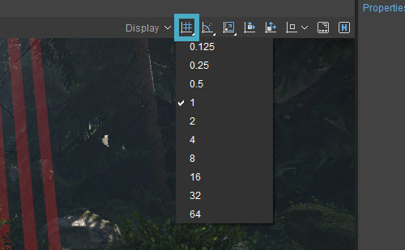
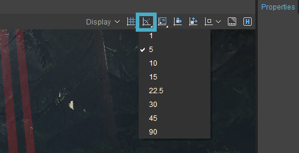
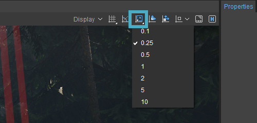
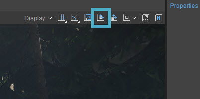
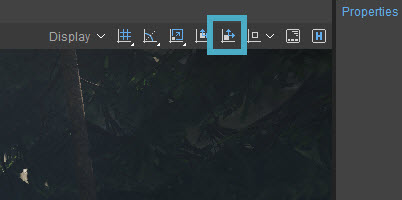
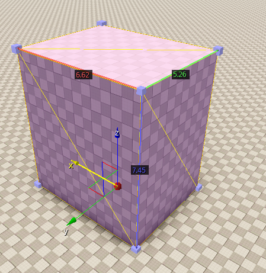
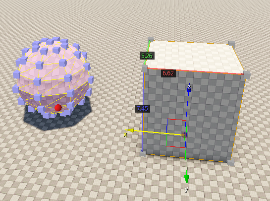
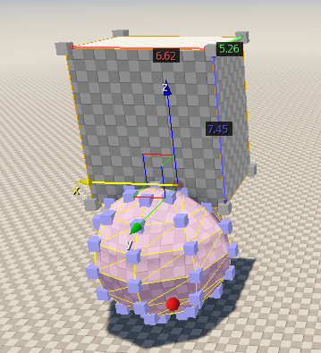
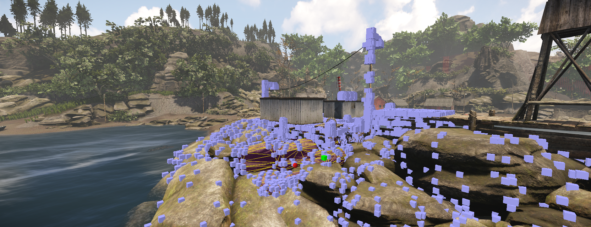
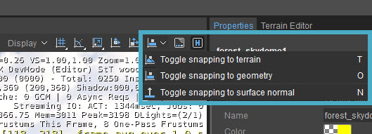

Overview
Snapping objects to terrain or other objects is a good way to easily place objects exactly where you want them, taking for example the height of the surface and the placement of other objects into account.
Grid Snapping
Grid Snapping can be toggled on/off by clicking the Grid Snapping button on the Viewport Menu in the top right corner of the Viewport, or by pressing I.
When objects are moved, they are snapped to the closest point on the grid specified in the dropdown menu of the Grid Snapping button.
To change the grid size, click the Grid Snapping button and hold down the mouse button:
It is also possible to right-click to see the grid sizes.

The default grids are based on the default unit inside CRYENGINE Sandbox, with 1 = 1m, 0.5 = 50 cm, etc.
When Move mode is enabled and helpers are turned on, the construction plane is toggled on automatically when you click on an object.
Angle Snapping
With Angle Snapping turned on, objects will rotate by the predefined amount, i.e. by 90 degrees.
Rotation mode needs to be turned on to be able to do this.
As with the Grid Snapping button, you can click the Angle Snapping button and hold down the mouse button to open a dropdown menu, which can be used to select the angle to rotate by. You can also toggle Angle Snapping with L.
It is also possible to right-click to see the angle snapping increments.

Scale Snapping
Scale Snapping can be toggled on/off by clicking the Scale Snapping button on the Viewport Menu in the top right corner of the Viewport, or by pressing K.
When objects are scaled, they are scaled in increments of the number you have selected. The higher the number, the more the object grows bigger/smaller with every step.

Pivot Snapping
The button next to the Angle Snapping button is the Pivot Snapping button:

This enables you to place the pivot of one object on top of the pivot of another object. This can be useful if for example you have an open box and you want to place an object into it quickly. You can toggle this snapping option by pressing P.
To use Pivot Snapping, select the object you want to move, then click the Pivot Snapping button, and finally select the object you want to snap the first object to.
This works no matter which mode is selected (Select, Move, Rotate or Scale).
Vertex Snapping
Vertex Snapping enables you to snap an object to a vertex of another object. In lieu of the object's origin, a selected vertex will be used as the temp origin.
You can toggle this snapping option by pressing V.

After turning on Vertex Snapping, small blue cubes are displayed to represent vertices in the selected object.
Select the first vertex or a pivot point. (The blue cubes are vertices and a red sphere is the pivot point.)

Then drag the selected vertex to the target vertex of another object:

The objects are now aligned:

If you are having trouble selecting the required vertex, adjust the camera position to get a better view.
To exit Vertex Snapping mode, press Escape to return to normal editor mode or click the Vertex Snapping button again to disable the mode.
If you want to change the settings for snapping, go to Edit -> Align/Snap -> Snap Settings. Here, you can change the angles and grids to values which are not covered by the default settings in the dropdown menu.
Example
The vertex cube size is adjusted automatically according to the distance from the camera so that the cubes are drawn as uniform sizes in a screen view.
And normally the vertices of objects around a mouse cursor are drawn.
Vertices Close to Camera:

Snap to Terrain / Snap to Geometry
It is also possible to make an object snap to the terrain or all of the geometry. This can be done using the last of the snapping buttons.

With Snap to Terrain you can snap an object to the ground. You can toggle this snapping option by pressing T.
Snap to Geometry snaps the currents selection to any piece of geometry in the level, which includes the terrain and any objects, regardless of their position in the level. You could for instance also snap an object to another object hanging in mid-air. You can toggle this snapping option by pressing O.
The object's pivot point will be moved to the terrain's/object's Z-position under the mouse cursor.
This will not affect the rotation of the object. It will simply snap the object to the surface, at its pivot point.
If you want the normal of the object to be the same as the normal of the surface it's snapped to, activate the Rotate to Surface Normal button as well. You can toggle this by pressing N.
A quick way to do this while you're already moving an object which is snapped to the surface, is to hold Ctrl while doing so.
Snapping an Object to Another Location
With an object selected, hold down Ctrl+Shift and click to snap the object's pivot point to a position on the terrain or to another object under the mouse cursor. This works even if the target object is locked, or if it belongs to a locked layer.
For more information on locking objects and layers, please refer to the Level Explorer documentation.
When using Ctrl+Shift+Alt, the object will be snapped at its pivot point to the z-position under the mouse cursor, and the pivot point's Z-Axis also to the surface normal of the position under the cursor.
Grid/Snap Settings
If you want to change the settings for snapping, go to Edit -> Align/Snap -> Snap Settings. Here, you can change the angles and grids to values which are not covered by the default settings in the dropdown menu.
You can also find these settings in the Preferences under General -> Snapping.